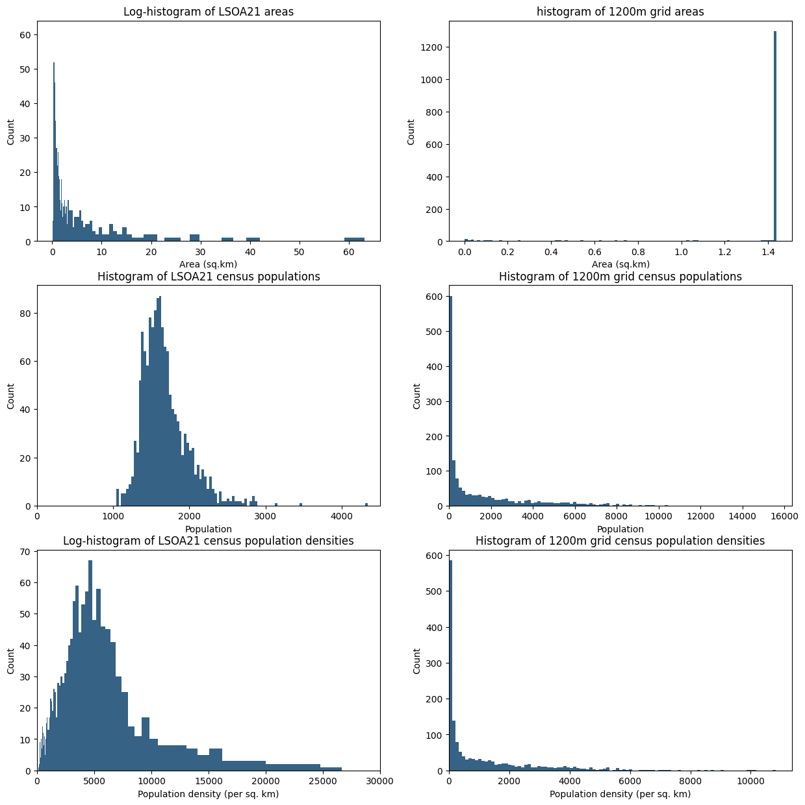
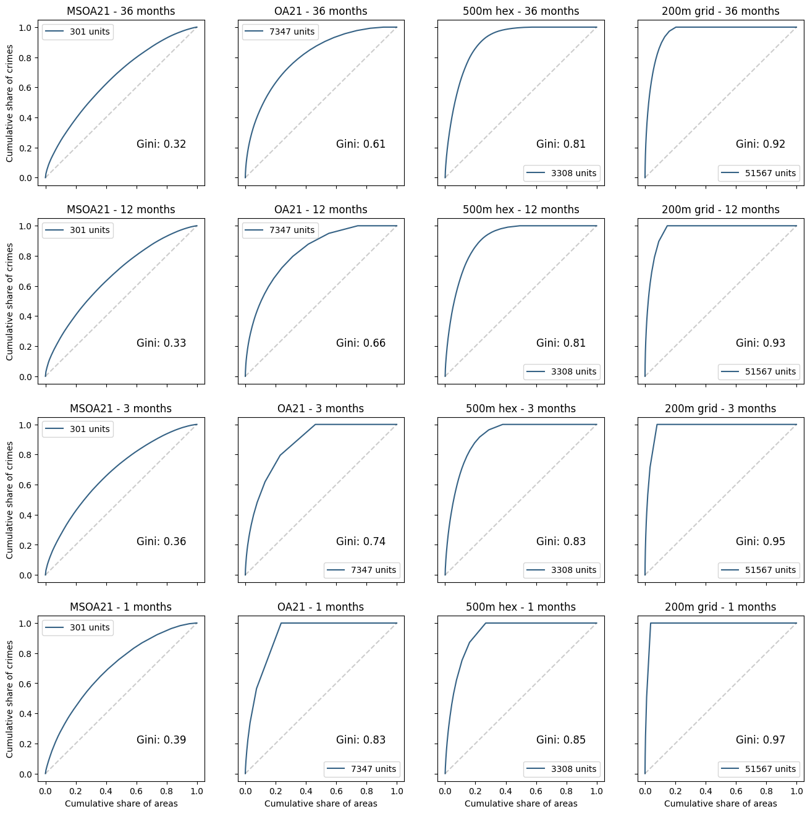
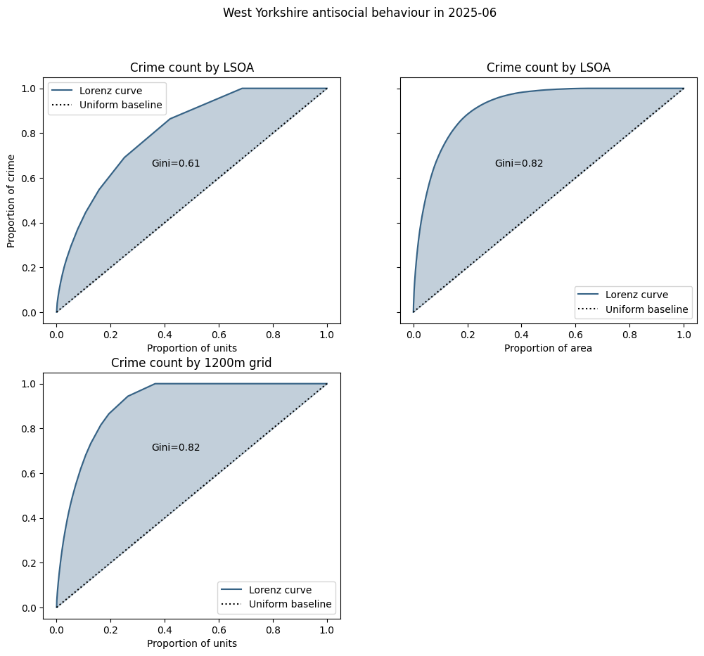
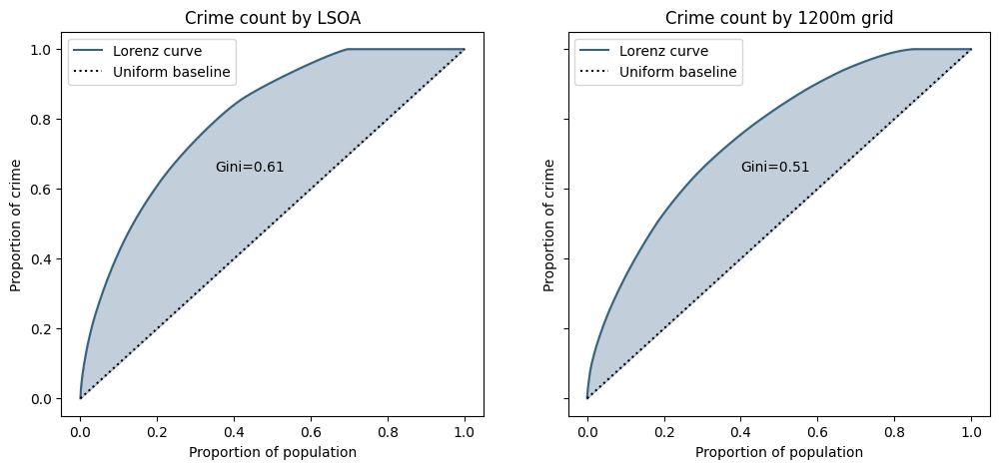
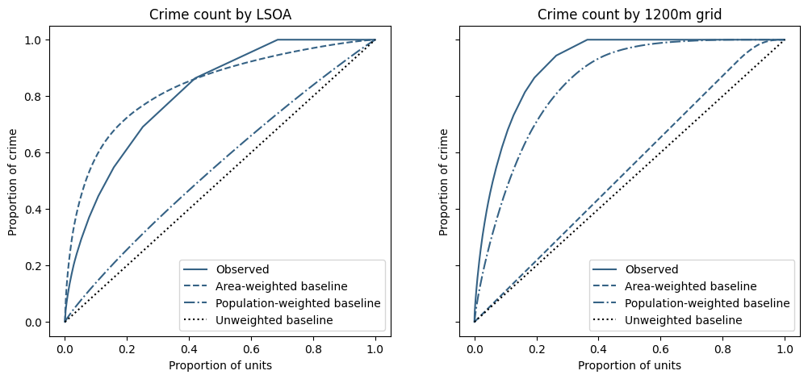
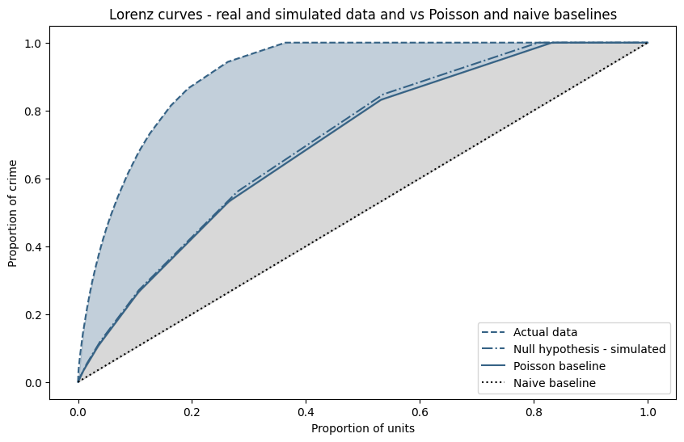

Measuring Crime Concentration (Part 1)
What constitutes concentration? In these articles we ask:
- how do we count crimes? And how do we account for and control for heterogeneity in our observations (units with different area and populations)?
- how do we decide if crime is concentrated? What measures are traditionally used?
- if crime is purely random and thus isn't concentrated in any meaningful sense, will we still measure some concentration using traditional measures?
- can we develop a "null hypothesis" statistical model to create a baseline measure, allowing us to differentiate between random and structural effects? What features must this model have to be realistic?
- how do we develop this into a useful measure?
Counting Crime
In the UK, the Police publish monthly crime statistics covering 12 broad categories of crime. The data includes precise geographic information - "snapped" coordinates(1) as well as LSOA(2) - but no information on timing other than the month in which it occurred. For the purposes of this article our dataset will be the incidents of antisocial behaviour in West Yorkshire PFA over the last 3 years.
 To preserve anonymity the points are snapped to "snap points" which are typically the centre of a
street segment or a public place
To preserve anonymity the points are snapped to "snap points" which are typically the centre of a
street segment or a public place- LSOA is a hierarchical census geography which controls (to some
extent) for resident population, so LSOAs can vary widely in terms of area but less so in terms of population - usually
containing 1000-3000 people. LSOAs are aggregations of OAs (Output Areas) and in turn aggregate into MSOAs (Middle
layer Super Output Area)
Since perpetrators and victims are people, we'd expect a strong correlation between population and crime counts in given spatial units. But locations also present opportunities for crime, we would also expect to see some correlation between area too.
Aggregation Options
Since we have metre-resolution coordinates for each crime we are free to count crimes in any spatial unit of our choice. This boils down to three categories:
-
statistical geographies that control for population and align to administrative boundaries, but vary widely in size and shape.
-
regular spatial units (grid, hex etc) that have constant area (except where they cross the PFA boundary) but widely varying population. The histograms below highlight the differences between LSOAs with and 1200m square grid (this size results in a similar number of units)
-
the street network. This typically will have the largest number of units - making it computationally more expensive - and has considerable variability in both size and population
Populations of non-statistical Spatial Units
Assigning populations to streets or regular spatial units in a realistic way warrants an article of it's own. Watch this space...

This illustrates how the choice of spatial units has a large impact on the structure of our count data, and in the coming sections we'll see that it has a profound effect on the concentration metrics that are normally used.
Measuring concentration
Once we have crime counts for each of our spatial units, how do we determine whether crime is concentrated? That is, how much of the clustering/clumpiness we observe can be attributed to random fluctuations, and how much is structural in some way? Traditional measures include the Lorenz curve(1), which plots the proportion of space against the proportion of events
- originally used in Economics to measure income disparity - cumulative wealth versus cumulative
population.
The steeper the Lorenz curve, the more crime is concentrated in a small number of areas. The Gini coefficient can be used to capture the disparity in a single value - it measures the amount by which the Lorenz curve deviates from a straight line. A straight line represents a perfectly uniform distribution of counts across units.
Using Antisocial behaviour in West Yorkshire as an example, the following graphs illustrate the variability of the Lorenz curve and Gini coefficient against different spatial and temporal aggregation scales:

Unsurprisingly, higher concentrations are observed at higher spatial and temporal resolutions. But this does not necessarily imply a structural concentration mechanism: after all, the smaller the spatial unit, the smaller the total area required to capture all crimes.
Ranking Spatial Units
Lorenz curves typically will have an \(x\) axis that describes the proportion of spatial units, but it often makes sense to weight the axis, for example the proportion of land area, population, or some other factor. To understand the difference weighting makes, consider this example where we want to capture 50% of crime:
| Index | No crimes | Area | Density |
|---|---|---|---|
| 0 | 1 | 10 | 0.1 |
| 1 | 1 | 10 | 0.1 |
| 2 | 2 | 25 | 0.08 |
| 3 | 0 | 5 | 0.0 |
An unweighted ordering would rank index 2 highest, and 50% of crime can be accounted for one unit. However, a ranking that minimises area would use the first two units to capture 50% of crime in the smallest area (20 units, as opposed to 25 units for the unweighted case)
Thus if we are using weights, the Lorenz curve plots the proportion of crimes as a function of the proportion of areas, ordered by the density of crime
Examples of the Lorenz curve and Gini coefficient using different measures
Using a month's worth of incidents (~2700) of antisocial behaviour in West Yorkshire, we can construct the Lorenz curves for crimes aggregated by LSOA and by a square grid of roughly equivalent average size. In each graph the black dotted line represents the "baseline", meaning the number of crimes in each spatial unit if crimes were uniformly distributed. The Gini coefficient(1) is represented by the shaded areas:
- the value of Gini is actually twice the shaded area.

For uniform spatial units there is no difference between the cumulative count of units and the cumulative area of units (since they all have the same area), but this is definitely not the case for LSOAs, as can be seen in the graph on the right.
In the left-hand graphs the dotted baseline curve represents an even distribution of crimes - in this case each spatial unit having the same number - approximately 1.9 - of crimes.
Since LSOAs vary widely in area, a fixed number of crimes represents a wide variation in crime density, so in the right-hand graph we have computed the Gini coefficient using a baseline that represents an even distribution of crime density - i.e. the crime count is proportional to the size of the unit. This increases the Gini coefficient, suggesting there is no strong correlation between crime counts and unit area.
What about population?
So far we have compared cumulative area to a simple count of units, but we could also look at cumulative population (which is arguably more justifiable than area). The graphs below show the Lorenz curves for LSOAs (left) and the regular grid (right).

Because LSOAs do not have a high degree of variability in population, the Lorenz curve is very similar to the unweighted one above and the Gini coefficient.
Conversely, because there is a very high degree of variability in population for a regular grid (some 15% of units actually have zero population) the Lorenz curve is less steep, and the Gini lower, suggesting there is a link between crime counts and resident population.
So what baseline should we use?
In the graphs below the Lorenz curves are plotted against various baselines - the curves you would get if crime was perfectly evenly distributed, in terms of either:
- "unweighted": the expected crime count is the same for each spatial unit
- "area-weighted": the expected crime count is proportional to the area of the spatial unit
- "population-weighted": the expected crime count is proportional to the population in the spatial unit

Firstly, since LSOAs don't vary widely in population, and grid area is constant with the exception of truncated units around the PFA edges, there is little difference between the unweighted baselines and the LSOA population-weighted and grid area-weighted baselines.
Conversely, the other baseline curves are much closer to the observed data and seem to imply "the observed concentration in crime in {LSOA, grid} can largely be explained by the variation the {area of, population in} the spatial unit".
And the table summarises the "Gini" values
| Modified Gini | Unweighted | Area | Population |
|---|---|---|---|
| LSOA | 0.61 | -0.05 | 0.52 |
| 1200m grid | 0.82 | 0.74 | 0.13 |
Now what?
We've used the same raw crime and population data to create some very different representations of crime concentration, illustrating the subjectivity of these measures and the profound impact the choice of aggregation can have.
However there's a more fundamental problem in the comparison against a perfectly even distribution of crime. In the next section we shall look at whether any of the baselines are a sensible reference value for measuring concentration.
What if crime isn't concentrated?
The distribution of crimes across spatial units is necessarily a discrete distribution, since you can't have fractional crimes. In the previous section the baseline represented ~1.9 crimes per unit, so is impossible - the closest we could get to this configuration is 2 crimes in ~90% of units and 1 in the remainder, which would add a "kink" to the baseline curve, reducing the shaded area and the Gini coefficient. When the baseline rate is less than one crime per unit (as is often the case), then we know some units must be crime-free, effectively squashing the baseline curve to the left and further reducing the shaded area.
So in order to measure how concentrated crime actually is, we first need to establish what metrics we get when we know crime isn't concentrated. This is our null hypothesis and can be easily simulated with random sampling.
Let's say we have \(N\) identical spatial units and our expectations is a total of \(C\) crimes. We consider crimes to be i.i.d. Poisson processes with intensity \(\lambda=C/N\) for each spatial unit.
In this model, our baseline of a perfectly even distribution is actually a (very) low entropy, (highly) improbable, state for the system. Firstly since we can't have fractional crimes, a perfectly even distribution isn't actually possible unless \(C\) is an integer multiple of \(N\).
How likely is an even distribution?
Taking the simplifying case where \(C=N\), the probability of exactly one crime in each unit is given by
which very quickly vanishes as the number of units \(N\) increases, so much so that if N is 750 or more, the probability cannot be represented in double precision arithmetic.
| N | p |
|---|---|
| 10 | 0.0003 |
| 30 | 1e-12 |
| 100 | 9e-43 |
| 300 | 2e-129 |
| 1000 | ~0 (not representable) |
Since crime analysis would typically have \(N\gg 100\) and also because typically \(C<N\), this does not seem to be a suitable reference for a concentration calculation.
When \(C<N\), a quasi-uniform distribution would be \(C\) units containing 1 crime, and \(N-C\) units crime-free. However, although there is more degeneracy(1), this confguration is also an improbable low entropy state with the chance of occurrence given by
- Whilst there is only 1 way of putting 10 crimes in 10 different spatial units, there are over 30,000 ways of putting 5 crimes into 10 units with no unit having more than one crime
The table below illustrates some probabilities for various values of \(C\) and \(N\):
| N | C | \(\lambda\) | p |
|---|---|---|---|
| 300 | 30 | 0.1 | 0.2 |
| 300 | 60 | 0.2 | 0.002 |
| 300 | 150 | 0.5 | 1e-20 |
| 1000 | 100 | 0.1 | 0.006 |
| 1000 | 200 | 0.2 | 5e-10 |
| 1000 | 500 | 0.5 | 3e-67 |
which again shows that this configuration is highly improbable for the typical values of \(N\) and \(C\) in crime analysis.
So what is the baseline?
What we are looking for is a baseline that would closely match the Lorenz curve for i.i.d. randomly sampled crimes, which by construction are not concentrated. This would ensure that a Gini-like index using this baseline would have a value close to zero for i.i.d. events.
The most probable, highest-entropy, state is actually given by the Poisson distribution itself.
In other words, in all likelihood there will likely be a mixture of counts in each unit, depending on the intensity (\(\lambda=C/N\)) of the Poisson process. The table below lists the expected number of units with a specific crime count, for 100 crimes at varying intensities:
| N | \(\lambda\) | empty | 1 crime | 2 crimes | 3 crimes | 4 crimes |
|---|---|---|---|---|---|---|
| 1000 | 0.1 | 904.8 | 90.5 | 4.5 | ||
| 500 | 0.2 | 409.4 | 81.9 | 8.2 | 0.5 | |
| 200 | 0.5 | 121.3 | 60.7 | 15.2 | 2.5 | 0.3 |
On this basis the null hypothesis Lorenz curve, the Poisson baseline, is given by
where \(Q(p;\lambda)\) is the inverse CDF of the Poisson distribution. The curve is piecewise-linear and continuous and is described by the origin and the set of points
where \(F(k; \lambda)\) is the CDF.
The figure below plots this curve and the naive baseline alongside real crime data and simulated (null hypothesis) crime data. Observe the following points:
- the actual crime data is clearly more concentrated than would be expected at random
- the Lorenz curve for the simulated crimes follows the Poisson baseline very closely
- the naive Gini value is represented by the combined blue and grey shaded areas

What does this mean?
Our assertion is that only the blue shaded area represents a level of concentration over and above purely random events, and in particular the grey shaded area (the "excess" Gini) cannot be be used to justify any structural mechanism - it arises purely from chance. Therefore, if our model of the Poisson baseline is valid and improves consistency over different spatial, temporal (and count) scaled, any measure of concentration should be made relative to the Poisson baseline.
So far, we have only looked at uniform spatial units, Next, we will attempt to validate the model by comparing the distributions of actual crime data and data simulated under the null hypothesis, and seeing if we can extend it to heterogeneous units such as census geographies (OA, LSOA, and/or MSOA).